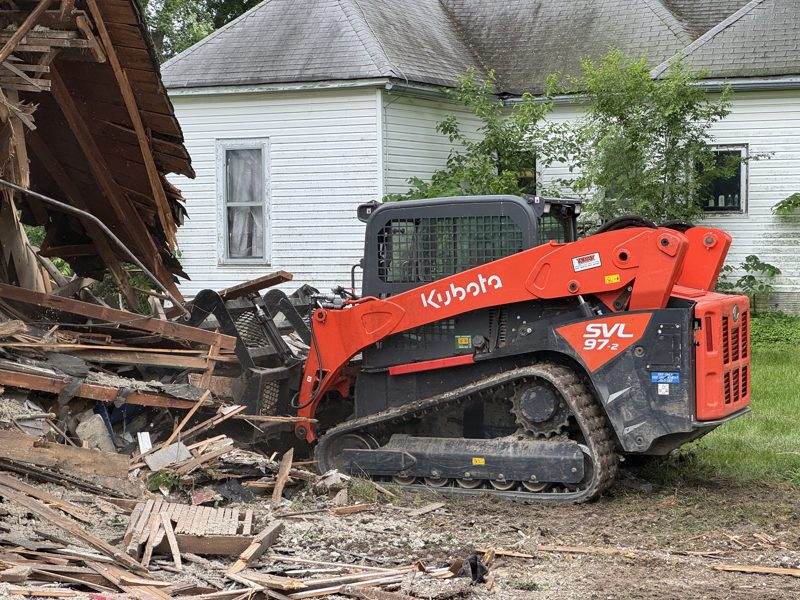

"What does it cost to get it off the lot?" That's the question I get within about a week of every house fire, and it's usually asked by somebody who has spent the last few days on the phone with an insurance company. The structure is a loss. Now it's a problem sitting in the middle of a property, and nobody has told them what happens next.
I'm Chris Kurtz, owner of Atlas Excavation & Demolition in Columbia, MO. We handle fire damage demolition across Boone County and the rest of Mid-Missouri, and the job is genuinely different from a planned teardown. The debris is nastier, the paperwork is heavier, and there's an insurance adjuster involved. Here's the whole picture, start to finish.
Quick Answer: Fire damage demolition in Columbia, MO usually runs in the same $10,000 to $25,000 range as a standard house teardown, but trends to the high end because burned debris is mixed, water-soaked, and heavier to haul. A total loss with a basement can pass $30,000. Insurance normally covers the teardown after a fire, though debris removal is often capped near 5 percent of dwelling coverage. You still need a city demolition permit, utility disconnects, and a Missouri DNR asbestos inspection with 10 working days of notice. Most jobs start 3 to 6 weeks after the fire. Call Atlas at (573) 234-6641 for a free walkthrough and a flat price.
In This Guide:
When a Fire-Damaged House Has to Come Down
Not every fire ends in a teardown. Plenty of kitchen fires and attic fires get repaired. The line between repair and demolition usually comes down to three things, and the insurance adjuster is looking at the same three.
- Structural members. Once fire reaches the framing, the load path is compromised. Charred studs, rafters, and floor joists lose section and strength. Sistering a few members is one thing. A house where the roof structure and bearing walls are burned through is another.
- Water and time. Putting a fire out means thousands of gallons through the structure. Add a few weeks of an open roof and Missouri humidity, and you have saturated sheathing, swollen subfloor, and mold moving through what the fire missed.
- Smoke penetration. Smoke gets into wall cavities, ductwork, and porous material everywhere. On a heavy burn, gutting to the studs to chase the odor can cost more than starting over.
When those three stack up, the repair estimate crosses the rebuild cost and the structure gets declared a total loss. That's the point where I usually get called. It's also worth knowing that the city can force the issue. A burned-out shell that sits open is a safety problem, and Columbia can order an unsafe structure secured or removed on its own timeline, which is rarely the timeline you'd choose.
If you're still deciding between fixing and starting over, our post on whether to demolish or renovate a house in Columbia, MO walks through the math in more detail.
What Fire Damage Demolition Costs in Columbia, MO
Here's the honest range. Fire damage demolition in Columbia and Boone County lands in roughly the same band as any residential teardown, $10,000 to $25,000 for most houses, but it pushes toward the upper half of that band more often than a clean demolition does.
| House size | Slab or crawlspace | Full basement |
|---|---|---|
| 1,000 sq ft | $9,000 - $14,000 | $13,000 - $19,000 |
| 1,500 sq ft | $11,000 - $17,000 | $16,000 - $24,000 |
| 2,000 sq ft | $13,000 - $20,000 | $19,000 - $28,000 |
Why the premium over a standard teardown? A few reasons, and they're all about the debris rather than the knockdown itself:
- You can't sort it the same way. On a clean demolition we can often pull metal, clean wood, and concrete out for recycling, which knocks down disposal tonnage. Burned material is contaminated and mixed, so most of it goes to the landfill as one waste stream.
- Water weight. Fire debris holds the water that put the fire out. You're paying to haul that weight.
- Slower, more careful work. A partially burned structure is unpredictable. We take it down in a controlled sequence rather than just pushing it in, which takes more machine hours.
- Hazardous material odds go up. Fire disturbs materials that were stable, which raises the chance the asbestos survey comes back positive and abatement gets added to the job.
Those numbers include the teardown, the debris haul-off, and backfill and grade on the lot. They don't include asbestos abatement if the survey finds regulated material, and they don't include the permit fee. For the wider picture across all teardown types, see our demolition cost guide for Columbia, Missouri and our detailed house demolition cost breakdown.
How Insurance Fits Into a Fire Damage Teardown
A house fire is a covered peril on a standard homeowners policy, which is the good news. Demolishing what's left and hauling it away is normally part of making the loss right. But the settlement rarely lines up with the demolition bill as neatly as people expect, and there are two places it goes sideways.
The debris removal sublimit. Most policies treat debris removal as its own line with its own cap, often around 5 percent of your dwelling coverage. On a $250,000 dwelling limit, that's $12,500. That covers a lot of teardowns. It does not always cover a 2,000 square foot total loss with a basement to fill. Ask your adjuster for that limit as a dollar figure, not a percentage.
Ordinance or law coverage. If the fire takes out part of the house and the city requires the rest to come down to meet current code, a basic policy may only pay for the damaged portion. Ordinance or law coverage picks up the demolition the code triggers. A lot of older Columbia housing stock was built under earlier codes, so this comes up here more than you'd think. We cover this in depth in our guide to whether insurance covers demolition.
The practical sequence that works best: file the claim, let the adjuster scope the loss, get that scope in writing, then bring us out to price the teardown against it. We work directly off the adjuster's scope and give you a flat written number, so you can see immediately whether the settlement covers the job or leaves a gap you need to negotiate. The Missouri Department of Commerce and Insurance also provides consumer help if your insurer and the real cost of the work don't line up.
Worth knowing: your insurer decides what it pays, but you decide who does the work. You are not required to use a demolition contractor the insurance company steers you toward. Getting your own quote is how you find out what the job actually costs.
Storm Damage Demolition in Mid-Missouri
Fire gets the headlines, but around here storms account for at least as many emergency teardowns. Straight-line winds, spring hail, and the occasional tornado track through Boone, Callaway, and Cooper counties every year, and the damage pattern is different from a fire.
Storm losses tend to be structural and sudden. A tree through the roof, a wall racked off plumb, or a mobile home rolled off its piers. The structure may look mostly intact from the road while the frame underneath is finished. That's why a storm-damaged building gets an engineer or a contractor's eyes on it before anybody decides to repair it.
The demolition process is nearly identical to a fire teardown, with two differences worth calling out. Storm debris is usually cleaner, so more of it can be sorted and recycled, which can pull the disposal cost down. But storms damage many properties at once, which means every contractor in the region is busy the same week and the wait for a crew gets longer. If a storm has taken out your structure, calling early matters more than it does after an isolated fire.
Manufactured housing takes the worst of it in a windstorm. If that's your situation, our mobile home removal service page covers how those teardowns work.
Permits, Utility Disconnects, and Asbestos
This is the part that decides your timeline, and it's where owners lose weeks they didn't need to lose. A fire does not exempt you from any of it.
The demolition permit. Inside Columbia city limits, you pull a demolition permit through Building and Site Development. The application requires utility disconnect certificates for gas, water, and electric, plus a sewer tap inspection from the City Sewer Maintenance Division. Outside city limits, Boone County has its own process. Full detail is in our post on the demolition permit process in Columbia, MO, and current fees and forms are on the City of Columbia Building and Site Development page.
The 30-day trap. If the structure is 50 years or older, a notice of Intent to Demolish can add a 30-day wait before the permit issues. Owners assume a burned-out house gets fast-tracked. It generally doesn't. Given how much of Columbia's older housing stock crosses that 50-year line, this is the single most common reason a fire teardown takes longer than expected.
Asbestos. Missouri DNR requires a certified asbestos inspection for regulated structures before demolition, and 10 working days of notice to the state before work begins. Fire makes this more important, not less. Heat and water break open materials that were previously intact and stable, so old floor tile, siding, pipe wrap, and insulation can end up disturbed and scattered through the debris pile. The survey tells us what's in there before we start moving it.
The way to compress all of this: start the permit and asbestos steps while the insurance claim is still being adjusted, instead of waiting for the settlement. Those two tracks can run at the same time. We handle the permit and the disconnect paperwork as part of the job, so the clock starts as early as it can.
Cleanup and What's Left When We Leave

The teardown itself is usually the fastest part, 1 to 3 days for a typical house. Cleanup is what determines whether the lot is actually usable afterward.
Our process on a fire or storm job runs in this order. Utilities confirmed dead at the meter. Any abatement completed and cleared. Structure brought down in a controlled sequence. Debris loaded and hauled. Foundation and basement walls broken out. Basement backfilled with clean fill, compacted in lifts so it doesn't settle into a crater two winters from now. Final grade, seeded if you want it.
That backfill detail matters more than it sounds. A basement filled with demolition debris instead of clean fill is a problem you'll discover later, when the ground sinks and no one will build on it. We don't bury the house in its own hole. The material leaves the site. If you want the specifics on where it goes, our post on demolition debris disposal in Columbia, MO covers the landfill and recycling side.
When we pull off, you should have a flat, clean, gradeable lot with no rebar sticking up and no debris in the grass. That's the standard, whether you're rebuilding on it or selling it.
Why Mid-Missouri Sees This Every Year
Two things make fire and storm teardowns a steady part of the work here rather than a rare event.
First, the weather. Mid-Missouri sits where spring systems organize, and Boone County catches straight-line winds and hail most years. Ashland, Boonville, Fulton, and the rural stretches between them see structure losses every storm season, and rural properties often wait longer for a crew simply because of drive time and access.
Second, the housing stock. A lot of Columbia and the surrounding small towns is older construction, which means knob-and-tube wiring, original wood framing, and materials that predate modern fire codes. Older houses burn differently and they're likelier to trigger both the asbestos survey and the 30-day historic notice. Rural properties add another wrinkle, since volunteer fire district response times are longer and a structure fire outside city limits more often ends as a total loss rather than a repairable one.
Put those together and fire damage demolition here isn't an unusual request. It's a normal part of what we do, which means we already know the permit desk, the DNR notice window, and how to work off an adjuster's scope without slowing your claim down.
Dealing With a Fire or Storm Loss?
We'll walk the property, work off your adjuster's scope, and give you a flat written price. No estimates guessed from a satellite photo.
Call (573) 234-6641 Or Get an Instant EstimateFrequently Asked Questions
Does insurance pay for fire damage demolition in Missouri?
Usually yes, at least in part. A house fire is a covered peril on a standard homeowners policy, so tearing down what is left and hauling the debris is normally folded into the claim. How much you actually collect depends on your dwelling limit, your debris removal sublimit, and whether you carry actual cash value or replacement cost coverage. The gap most owners run into is debris removal, which is often capped near 5 percent of dwelling coverage and can fall short on a total loss. Get the adjuster's scope in writing, then have a demolition contractor price the teardown against it so you know whether the settlement covers the whole job.
How much does it cost to demolish a fire-damaged house in Columbia, MO?
Most fire damage teardowns in Columbia and Boone County land in the same $10,000 to $25,000 band as a standard house demolition, but they trend toward the top of it. A total loss with a full basement can run past $30,000. Fire debris costs more to handle because it is mixed, often soaked from firefighting, heavier per load, and it cannot always be sorted and recycled the way a clean teardown can. Square footage, basement or slab, asbestos findings, and site access drive the rest of the number. We price the teardown and the haul-off together as one flat figure after walking the property.
Do I need a permit to demolish a fire-damaged house in Columbia?
Yes. A fire does not remove the permit requirement. Inside Columbia city limits you still pull a demolition permit through Building and Site Development, and the application requires utility disconnect certificates for gas, water, and electric plus a sewer tap inspection. If the structure is 50 years or older, a notice of Intent to Demolish can add a 30-day wait before the permit is issued, which surprises owners who assumed a burned-out house would be fast-tracked. We pull the permit and handle the disconnect paperwork as part of the job, so the clock starts as early as it can.
Is asbestos testing required before demolishing a fire-damaged building?
Yes, and fire does not exempt you. Missouri DNR requires a certified asbestos inspection for regulated structures before demolition, plus 10 working days of notice to the state before work starts. Fire actually makes this step more important rather than less. Heat and water break open materials that were previously intact, so siding, floor tile, pipe wrap, and old insulation can be disturbed and scattered through the debris. The inspection tells us what is in the pile before we start moving it, which protects the crew, the neighbors, and you.
How long does fire damage demolition take?
The teardown itself is usually 1 to 3 days for a typical house. The paperwork ahead of it is what stretches the calendar. Between the insurance adjuster's scope, the asbestos inspection, the 10-day DNR notice, utility disconnects, and the permit, most fire damage demolition jobs in Columbia start 3 to 6 weeks after the fire. If the structure is 50 years or older and triggers the 30-day Intent to Demolish notice, add to that. The fastest way to compress the timeline is to start the permit and asbestos steps while the claim is still being adjusted.
Need Fire Damage Demolition in Columbia or Mid-Missouri?
A fire or a storm is a bad week that turns into a long month. The demolition part doesn't have to be the hard part. Atlas Excavation & Demolition handles fire damage demolition, storm damage teardowns, and full residential and light commercial demolition across Columbia, Ashland, Boonville, Fulton, Centralia, and the rest of Mid-Missouri. We're licensed and insured, we work off your adjuster's scope, we answer the phone, and we leave the lot clean and graded.
- Phone: (573) 234-6641
- Email: hello@deployatlas.com
- Online: Instant estimate form